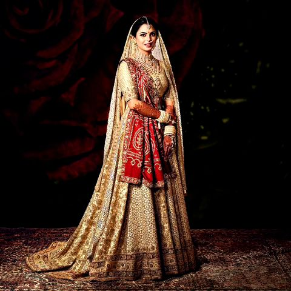
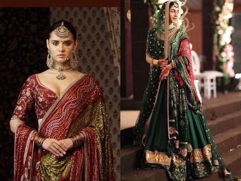
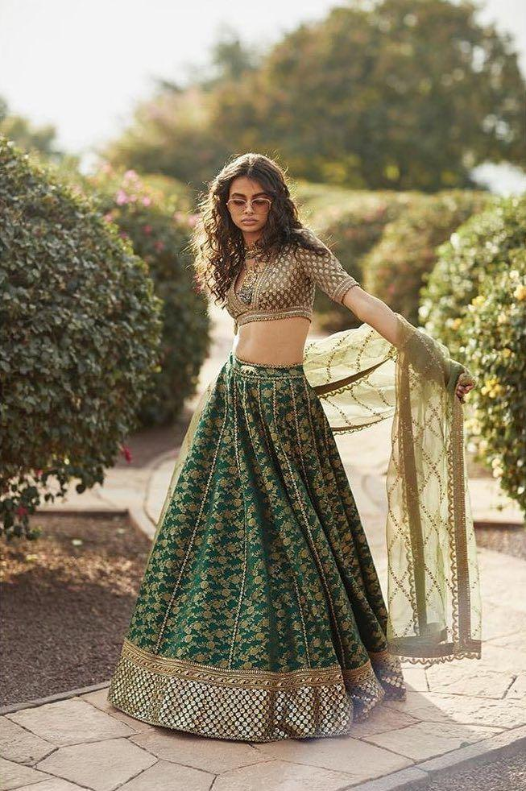

Design Language: How Craft Becomes Couture
Sabyasachi’s design language feels like walking into an old museum of textiles. While writing this blog, I realised his collections aren’t trend-based—they are emotion-based.
He uses:
- textural layering (matka silk + zardozi + organza dupattas)
- heritage silhouettes like panelled anarkalis and vintage blouses
- jewel-toned palettes—sindoor red, emerald, burnt gold
- handcrafted couture finishing like mukaish highlights
His visual campaigns feel almost nostalgic, using natural light, antique props, and real spaces. Studying this made me understand the difference between design and storytelling. A garment ends on the body, but fashion begins in emotion.
⸻